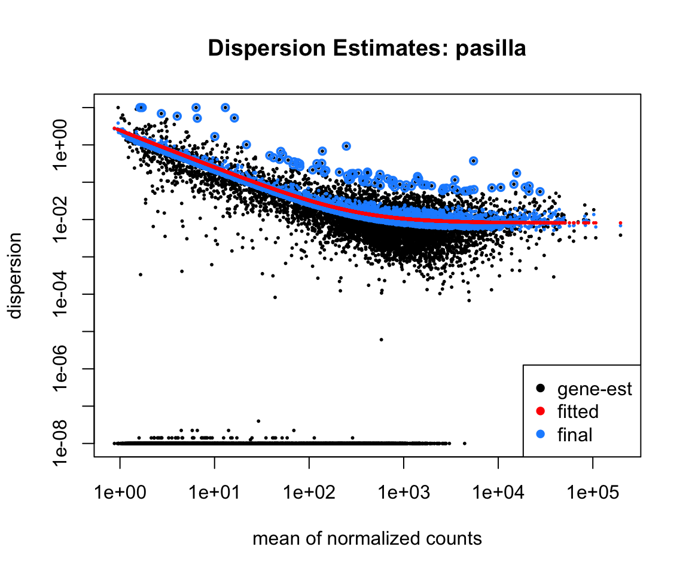
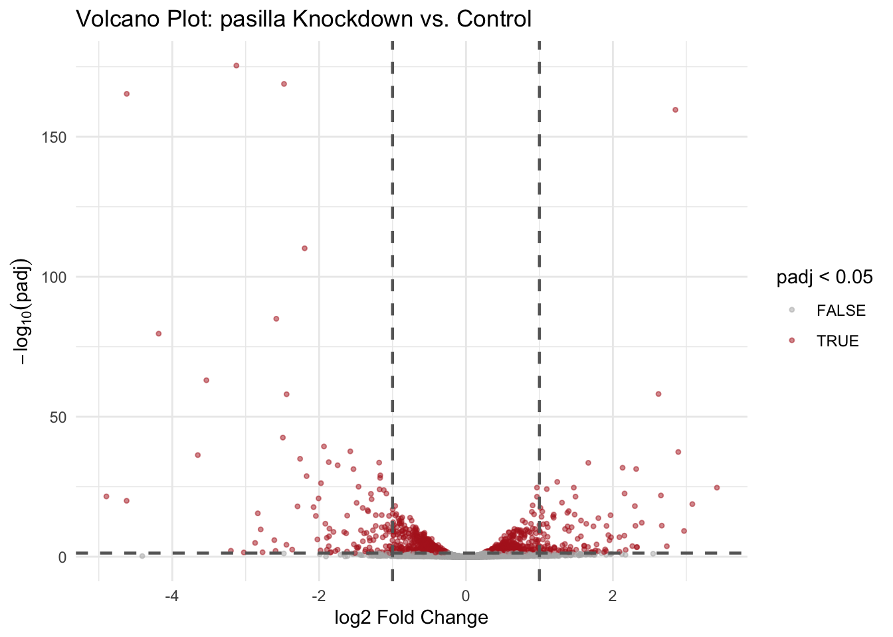
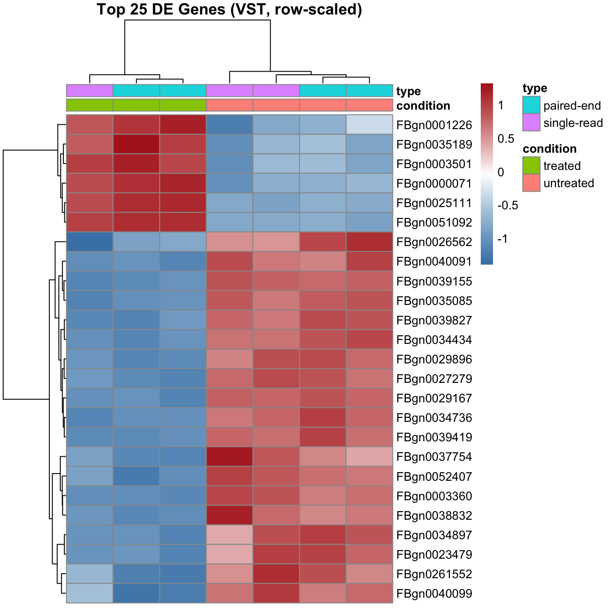
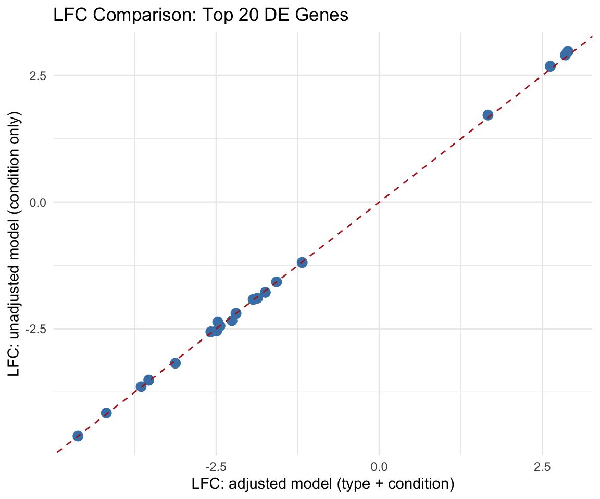
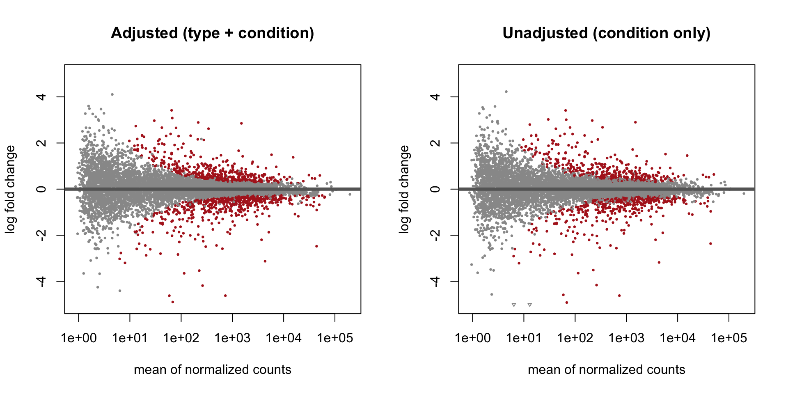

library(tidyverse)
library(this.path)
library(SummarizedExperiment)
library(DESeq2)
library(pasilla)
library(pheatmap)
library(patchwork)
setwd(this.dir())
select <- dplyr::select
filter <- dplyr::filter
count <- dplyr::count
# ── Data loading (same as instructor demo) ─────────────────────────────────
counts_file <- system.file("extdata", "pasilla_gene_counts.tsv",
package = "pasilla")
meta_file <- system.file("extdata", "pasilla_sample_annotation.csv",
package = "pasilla")
counts <- read.table(counts_file, header = TRUE, row.names = 1) |>
as.matrix()
meta <- read.csv(meta_file, row.names = 1)
rownames(meta) <- sub("fb", "", rownames(meta))
meta <- meta[colnames(counts), ]
# ── DESeq2 model (same as instructor demo) ─────────────────────────────────
dds <- DESeqDataSetFromMatrix(
countData = counts,
colData = meta,
design = ~ type + condition
)
dds$condition <- relevel(dds$condition, ref = "untreated")
dds$type <- relevel(dds$type, ref = "single-read")
keep <- rowSums(counts(dds)) >= 10
dds <- dds[keep, ]
deseq_dds <- DESeq(dds)
res <- results(deseq_dds, name = "condition_treated_vs_untreated")
# ── Results tibble used throughout ────────────────────────────────────────
res_df <- as.data.frame(res) |>
rownames_to_column("gene_id") |>
as_tibble() |>
arrange(padj)Day 12 (PM) Lab: Differential Expression Analysis – Solutions
SC INBRE Biostatistics Summer Intensive 2026
1 Exercise 1 – Explore the Results Table
1.1 Part a: Structure of the results table
cat("Rows:", nrow(res_df), "\n")Rows: 9921 head(res_df)# A tibble: 6 × 7
gene_id baseMean log2FoldChange lfcSE stat pvalue padj
<chr> <dbl> <dbl> <dbl> <dbl> <dbl> <dbl>
1 FBgn0003360 4343. -3.13 0.109 -28.6 4.45e-180 3.82e-176
2 FBgn0026562 43909. -2.48 0.0883 -28.1 3.13e-173 1.34e-169
3 FBgn0039155 731. -4.62 0.166 -27.8 1.65e-169 4.72e-166
4 FBgn0025111 1501. 2.85 0.105 27.3 1.12e-163 2.40e-160
5 FBgn0029167 3706. -2.20 0.0968 -22.7 4.03e-114 6.91e-111
6 FBgn0035085 638. -2.58 0.129 -20.0 7.16e- 89 1.02e- 85The table has one row per gene tested. Each row contains the gene ID, the average normalized expression across all samples (baseMean), the estimated log2 fold change between treated and untreated (log2FoldChange), its standard error (lfcSE), a Wald test statistic (stat), the raw p-value, and the Benjamini-Hochberg adjusted p-value (padj). There is one row for every gene that passed the low-count filter, roughly 10,000–12,000 genes.
1.2 Part b: Significant genes
cat("padj < 0.05:", res_df |> filter(padj < 0.05) |> nrow(), "\n")padj < 0.05: 1080 cat("padj < 0.01:", res_df |> filter(padj < 0.01) |> nrow(), "\n")padj < 0.01: 735 Several hundred genes pass each threshold. Moving from 0.05 to 0.01 roughly halves the number of significant genes, as the stricter threshold accepts fewer false discoveries.
1.3 Part c: Direction of change
res_df |>
filter(padj < 0.05) |>
mutate(direction = if_else(log2FoldChange > 0,
"Upregulated",
"Downregulated")) |>
count(direction)# A tibble: 2 × 2
direction n
<chr> <int>
1 Downregulated 592
2 Upregulated 488Upregulated means higher expression in the treated (pasilla knockdown) samples compared with the untreated controls. Since pasilla is an RNA-binding protein involved in splicing, many of the upregulated genes are likely those normally suppressed by pasilla activity – when pasilla is knocked down, their expression rises. The roughly equal number of up and downregulated genes is consistent with a transcription factor or splicing regulator that activates some genes and represses others.
1.4 Part d: Most significant gene
res_df |>
slice_min(padj, n = 1) |>
select(gene_id, log2FoldChange, padj)# A tibble: 1 × 3
gene_id log2FoldChange padj
<chr> <dbl> <dbl>
1 FBgn0003360 -3.13 3.82e-176The most significant gene has a large negative log2 fold change and a near-zero adjusted p-value, indicating both a biologically meaningful and statistically robust change in expression after pasilla knockdown.
1.5 Part e: Top 10 genes
res_df |>
slice_min(padj, n = 10) |>
select(gene_id, log2FoldChange, padj) |>
mutate(log2FoldChange = round(log2FoldChange, 3),
padj = formatC(padj, format = "e", digits = 2))# A tibble: 10 × 3
gene_id log2FoldChange padj
<chr> <dbl> <chr>
1 FBgn0003360 -3.13 3.82e-176
2 FBgn0026562 -2.48 1.34e-169
3 FBgn0039155 -4.62 4.72e-166
4 FBgn0025111 2.85 2.40e-160
5 FBgn0029167 -2.20 6.91e-111
6 FBgn0035085 -2.58 1.02e-85
7 FBgn0039827 -4.18 2.13e-80
8 FBgn0034736 -3.54 9.31e-64
9 FBgn0000071 2.62 7.41e-59
10 FBgn0029896 -2.44 9.34e-59 2 Exercise 2 – Size Factors and Dispersion
2.1 Part a: Size factors
sf <- sizeFactors(deseq_dds)
sort(sf)untreated3 untreated4 treated2 treated3 untreated1 treated1 untreated2
0.6494828 0.7516005 0.7612159 0.8326603 1.1383376 1.6355014 1.7935406 cat("Sample with largest size factor: ", names(which.max(sf)), round(max(sf), 3), "\n")Sample with largest size factor: untreated2 1.794 cat("Sample with smallest size factor:", names(which.min(sf)), round(min(sf), 3), "\n")Sample with smallest size factor: untreated3 0.649 A large size factor means the sample was sequenced to a greater depth than the typical sample in this dataset: it has proportionally more reads and would appear to have higher counts for every gene if we compared raw counts directly. DESeq2 divides each sample’s raw counts by its size factor before testing, so that differences in count magnitude reflect biology rather than sequencing depth.
2.2 Part b: Dispersion plot
plotDispEsts(deseq_dds,
main = "Dispersion Estimates: pasilla",
cex = 0.4)
The black dots (per-gene dispersion estimates from the data alone) are scattered widely around the fitted red trend line, especially at low expression levels where small counts make per-gene estimates very noisy. The blue dots (final shrunken estimates) are pulled toward the red trend, reducing the influence of extreme per-gene estimates. A small number of black open circles appear above the trend – these are genes with unusually high per-gene dispersion that DESeq2 flags as potential outliers and does not shrink toward the trend, because their extreme dispersion may represent genuine biological variability rather than estimation noise.
2.3 Part c: Dispersion for three genes
# Creating a tibble with the results (IMPORTANT: do not sort by padj.)
res_df <- as.data.frame(res) |>
rownames_to_column("gene_id") |>
as_tibble()
# This gives the dispersions for each row of the DESeqDataSet.
disp_vals <- dispersions(deseq_dds)
# I'm going to add the dispersion to the results.
# This is why it was important that we didn't res_df by sort by padj.
res_df <- res_df |>
mutate(
disp_val = disp_vals)
res_df |>
slice_max(baseMean, n=1) |>
mutate(Category = "Highest_mean") |>
bind_rows(
res_df |>
filter(baseMean > 0) |>
slice_min(baseMean, n=1) |>
mutate(Category = "Lowest non-zero mean")
) |>
bind_rows(
res_df |>
slice_min(padj, n=1) |>
mutate(Category = "Top DE gene")
) |>
arrange(disp_val) |>
select(gene_id, Category, baseMean, log2FoldChange, padj, disp_val)# A tibble: 3 × 6
gene_id Category baseMean log2FoldChange padj disp_val
<chr> <chr> <dbl> <dbl> <dbl> <dbl>
1 FBgn0000556 Highest_mean 196243. -0.227 9.19e- 2 0.00685
2 FBgn0003360 Top DE gene 4343. -3.13 3.82e-176 0.00878
3 FBgn0085297 Lowest non-zero mean 0.873 0.114 NA 2.69 The highly expressed gene (highest mean) has a small dispersion estimate (its counts are consistent across samples relative to its mean). The lowly expressed gene has a much larger dispersion estimate, reflecting the greater proportional variability that is typical of low-count genes. The top DE gene has a moderate mean expression and a dispersion consistent with that expression level – it is not extreme in either direction.
3 Exercise 3 – Volcano Plot
3.1 Parts a and b: Volcano plot with quadrant lines
volcano_df <- res_df |>
filter(!is.na(padj)) |>
mutate(significant = padj < 0.05)
ggplot(volcano_df, aes(x = log2FoldChange,
y = -log10(padj),
color = significant)) +
geom_point(alpha = 0.5, size = 0.9) +
scale_color_manual(values = c("FALSE" = "gray70", "TRUE" = "firebrick")) +
geom_vline(xintercept = c(-1, 1), linetype = "dashed",
color = "gray40", linewidth = 0.8) +
geom_hline(yintercept = -log10(0.05), linetype = "dashed",
color = "gray40", linewidth = 0.8) +
labs(x = "log2 Fold Change",
y = expression(-log[10](padj)),
color = "padj < 0.05",
title = "Volcano Plot: pasilla Knockdown vs. Control") +
theme_minimal()
3.2 Part c: Gene counts per quadrant
volcano_df |>
filter(padj < 0.05) |>
mutate(
quadrant = case_when(
log2FoldChange > 1 ~ "Upper right (sig + up > 2x)",
log2FoldChange < -1 ~ "Upper left (sig + down > 2x)",
TRUE ~ "Upper center (sig, small LFC)"
)
) |>
count(quadrant)# A tibble: 3 × 2
quadrant n
<chr> <int>
1 Upper center (sig, small LFC) 858
2 Upper left (sig + down > 2x) 113
3 Upper right (sig + up > 2x) 1093.3 Part d: Interpretation of quadrants
Genes in the top-right corner are both statistically significant and strongly upregulated after pasilla knockdown – these are the most compelling candidates for follow-up, being both reliable (low false discovery probability) and biologically meaningful in magnitude. Genes in the bottom-center have small absolute log2 fold changes and low significance: the expression change is negligible or the evidence is weak, and these genes would not be prioritized.
4 Exercise 4 – Heatmap of Top DE Genes
4.1 Parts a–d: VST, subset, scale, and heatmap
vsd <- vst(deseq_dds, blind = FALSE)
# Top 25 most significant genes
top25_ids <- res_df |>
filter(!is.na(padj)) |>
slice_min(padj, n = 25) |>
pull(gene_id)
mat <- assay(vsd)[top25_ids, ]
mat_scaled <- t(scale(t(mat)))
col_anno <- colData(vsd) |>
as_tibble(rownames = "sample") |>
select(sample, condition, type) |>
mutate(condition = as.character(condition),
type = as.character(type)) |>
column_to_rownames("sample")
pheatmap(mat_scaled,
annotation_col = col_anno,
cluster_rows = TRUE,
cluster_cols = TRUE,
show_rownames = TRUE,
show_colnames = FALSE,
color = colorRampPalette(
c("steelblue", "white", "firebrick"))(100),
main = "Top 25 DE Genes (VST, row-scaled)")
The treated and untreated samples cluster separately along the columns, confirming that the top DE genes genuinely separate the two experimental groups. A two-block pattern is visible in the rows: one block of genes is consistently higher (red) in treated samples and lower (blue) in untreated, and a second block runs in the opposite direction. This is the expected pattern for a strong, consistent treatment effect.
4.2 Part e: Library type effect
Looking at the type column annotation, the two paired-end untreated sample and the three paired-end treated samples do not cluster separately from the single-read untreated samples within each condition. This confirms what we saw in the Day 11 PCA: library type is not the dominant source of variation in this dataset. Nevertheless, because it is partially confounded with condition (all treated samples happen to be paired-end), including it in the design formula is the correct modeling choice. Failing to do so would leave a potential technical confound unaddressed, even if the practical impact appears small here.
5 Exercise 5 – Model Comparison: With vs. Without Library Type
5.1 Part a: Fit the unadjusted model
dds_simple <- DESeqDataSetFromMatrix(
countData = counts,
colData = meta,
design = ~ condition
)
dds_simple$condition <- relevel(dds_simple$condition, ref = "untreated")
keep_simple <- rowSums(counts(dds_simple)) >= 10
dds_simple <- dds_simple[keep_simple, ]
dds_simple <- DESeq(dds_simple)
res_simple <- results(dds_simple,
name = "condition_treated_vs_untreated")
res_simple_df <- as.data.frame(res_simple) |>
rownames_to_column("gene_id") |>
as_tibble() |>
arrange(padj)5.2 Part b: Number of significant genes
tibble(
Model = c("Adjusted (type + condition)", "Unadjusted (condition only)"),
Sig_padj_05 = c(
res_df |> filter(padj < 0.05) |> nrow(),
res_simple_df |> filter(padj < 0.05) |> nrow()
)
)# A tibble: 2 × 2
Model Sig_padj_05
<chr> <int>
1 Adjusted (type + condition) 1080
2 Unadjusted (condition only) 841Adjusting for library type typically increases the number of significant genes. By including type in the model, we explain some of the residual variability in the data, which tightens the estimates and increases power for detecting true treatment effects.
5.3 Part c: LFC comparison for top 20 genes
top20_ids <- res_df |>
filter(!is.na(padj)) |>
slice_min(padj, n = 20) |>
pull(gene_id)
lfc_compare <- tibble(
gene_id = top20_ids,
LFC_adj = res_df$log2FoldChange[match(top20_ids, res_df$gene_id)],
LFC_simple = res_simple_df$log2FoldChange[
match(top20_ids, res_simple_df$gene_id)]
)
ggplot(lfc_compare, aes(x = LFC_adj, y = LFC_simple)) +
geom_point(color = "steelblue", size = 3) +
geom_abline(slope = 1, intercept = 0,
linetype = "dashed", color = "firebrick") +
labs(x = "LFC: adjusted model (type + condition)",
y = "LFC: unadjusted model (condition only)",
title = "LFC Comparison: Top 20 DE Genes") +
theme_minimal()
The LFC estimates are generally similar between the two models for the top genes, with points falling close to the diagonal. This is consistent with our observation that library type is not the dominant driver of expression differences in this dataset. Larger departures from the diagonal would indicate that unadjusted estimates were confounded by library type.
5.4 Part d: MA plot comparison
par(mfrow = c(1, 2))
plotMA(res, ylim = c(-5, 5), alpha = 0.05, colSig = "firebrick",
main = "Adjusted (type + condition)")
plotMA(res_simple, ylim = c(-5, 5), alpha = 0.05, colSig = "firebrick",
main = "Unadjusted (condition only)")
par(mfrow = c(1, 1))The two MA plots look broadly similar, but the adjusted model typically has slightly more red (significant) points, particularly among genes with moderate to high expression. The unadjusted model shows somewhat wider scatter in the non-significant genes, reflecting the extra unexplained variance from not modeling library type.
5.5 Part e: Discussion
Adjusting for library type changes the results because library type (single-read vs. paired-end) introduces systematic technical differences in which reads are captured and counted. In this experiment, all three treated samples happen to be paired-end while most untreated samples are single-read. If we fit a model with only condition, the model cannot distinguish between expression differences due to the knockdown and expression differences due to the sequencing protocol. The library-type effect gets absorbed into the condition coefficient, potentially biasing the treatment estimates.
This is the same confounding logic from Day 8’s logistic regression: when a technical variable is correlated with the exposure of interest, failing to adjust for it produces biased estimates of the effect you care about. Including type in the design formula tells DESeq2 to estimate the library-type effect separately and then test for the treatment effect after removing it – the genomics equivalent of an adjusted odds ratio.
In this particular dataset, the confounding appears modest (the LFC estimates are similar between models), probably because the biological treatment effect is large enough to dominate any library-type artifact. But the correct approach is to adjust regardless, because we cannot know in advance how large the confounding will be.